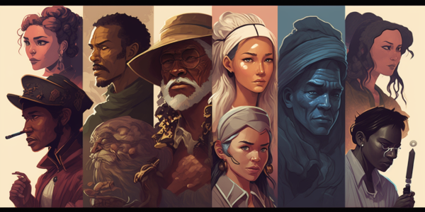

The Ultimate Character Creation Guide for Fantasy Writers and RPG Players
Introduction
Crafting a compelling character is a cornerstone of storytelling, whether you're writing a novel, developing a role-playing game, or creating a screenplay. A well-rounded, memorable character has the power to captivate your audience and transport them into the world you've built. By taking the time to develop a character that feels alive and real, you can create a more engaging, immersive experience for your readers or players. In this guide, we'll walk you through the essential steps of character creation, from conceptualization to development. We'll explore the various components that make up a compelling character, including their background, personality, physical appearance, goals, and relationships with other characters. We'll also delve into the importance of character arcs, conflicts, and growth over time, all of which contribute to the depth and believability of your character. Whether you're a seasoned writer or a newcomer to storytelling, this guide aims to equip you with the tools and insights necessary to bring your characters to life. By following the advice and exercises outlined here, you can create characters that resonate with your audience and leave a lasting impression. Remember, character creation is a journey full of exploration, trial and error, and creative discovery. Embrace the process, learn from your experiences, and most importantly, enjoy the adventure of crafting unforgettable characters that will captivate your readers or players.
Why Character Development Matters
Character development is crucial to storytelling because it brings your narrative to life and helps your audience connect with your characters on a deeper level. By investing time and effort into developing rich, multidimensional characters, you can create a more immersive and enjoyable experience for your readers or players. Here are some reasons why character development matters:
- Emotional investment: Well-developed characters evoke emotions in your audience, whether it's sympathy, love, hatred, or admiration. This emotional investment keeps your audience engaged and invested in the story, rooting for or against your characters.
- Relatability: Characters with depth and complexity are more relatable, allowing your audience to see themselves in their struggles, desires, and triumphs. This connection helps your readers or players become more immersed in the story and care about the outcomes.
- Realism: Fleshed-out characters with distinct personalities, backgrounds, and motivations make your fictional world feel more realistic and believable. The more your characters resemble real people, the easier it is for your audience to suspend their disbelief and become lost in your story or game.
- Dynamic storytelling: Characters that grow and change over time create dynamic, engaging narratives. Character development adds depth to your story, as characters face challenges, overcome obstacles, and evolve in response to their experiences.
- Conflict and tension: Well-developed characters often have conflicting goals, desires, or beliefs, which can generate tension and conflict within your narrative. This conflict drives the story forward and keeps your audience eager to know what happens next.
- Memorability: Memorable characters leave a lasting impression on your audience, making your story or game more enjoyable and impactful. By creating unique, fully-realized characters, you can craft an unforgettable narrative that resonates with your readers or players long after they've finished.
By understanding the importance of character development and putting it into practice, you can create more engaging, meaningful stories or games that captivate your audience and stand the test of time.
Background and Origins
Understanding your character's background and origins is key to crafting a well-rounded and believable individual. This section will provide valuable insights and tips on how to develop a rich history for your character that will influence their personality, motivations, and actions throughout the story.
- Explore your character's family history Consider your character's family background and how it has shaped their identity. Think about their parents, siblings, and other relatives, as well as any significant family traditions, values, or secrets that may impact your character's development.
- Determine your character's social status Your character's social status can greatly affect their experiences and opportunities in life. Consider factors like wealth, education, and occupation, and how these aspects of their background might shape their goals, attitudes, and relationships with other characters.
- Delve into your character's upbringing The environment in which your character was raised can have a lasting impact on their personality and outlook on life. Consider the community, culture, and living conditions they experienced during their formative years, as well as any key events or turning points that influenced their beliefs, values, or behavior.
- Uncover past traumas or significant events Your character's past experiences can greatly influence their present actions and motivations. Explore any past traumas, successes, or defining moments in their life that have shaped their character and contributed to who they are today.
- Examine your character's education and training Consider the type and quality of education or training your character has received, whether it's formal schooling, vocational training, or mentorship. This background can influence their skills, knowledge, and expertise, as well as their worldview and social connections.
- Incorporate cultural and historical context To create a well-rounded character, take into account the broader cultural and historical context of their background. Consider how events, trends, or social issues from their time and place of origin may have impacted their experiences and beliefs.
By thoroughly exploring your character's background and origins, you'll gain a deeper understanding of their motivations, strengths, and weaknesses, ultimately creating a more engaging and authentic character for your readers or players to connect with.
Physical Appearance and Attributes
Physical appearance and attributes play a significant role in how your character is perceived by others in your story or game, and can also influence their abilities, limitations, and interactions. Here are some tips to help you create an engaging and memorable character by considering their physical traits:
- Think beyond clichés: While it's essential to consider common physical features like height, build, eye color, and hair color, try to think outside the box. Consider less common traits, such as unique markings, scars, tattoos, or unusual eye or hair colors. This will make your character stand out and be more memorable.
- Consider the character's background: Your character's physical appearance should reflect their background and origins. Think about how their upbringing, culture, and environment might have shaped their appearance. For example, a character raised in a desert environment might have sun-weathered skin and practical clothing.
- Factor in age and experience: A character's age and life experiences should be reflected in their physical appearance. Older characters might have wrinkles, gray hair, or a more worn look, while younger characters might appear more vibrant and youthful. Battle-hardened warriors could have scars, while a scholar might wear glasses.
- Body language and posture: A character's body language and posture can reveal a lot about their personality and emotional state. Confident characters might stand tall with their shoulders back, while shy or introverted characters might hunch their shoulders or avoid eye contact. Consider how your character moves and carries themselves in various situations.
- Outfits and accessories: Clothing and accessories can also provide insight into your character's personality, social status, and occupation. A noble character might wear expensive, high-quality fabrics, while a rogue might prefer dark, inconspicuous clothing. Consider how your character's wardrobe and accessories might change over the course of your story or game.
- Physical abilities and limitations: Your character's physical attributes can impact their skills and abilities. A character with high strength might be skilled in hand-to-hand combat, while a character with exceptional agility might excel at acrobatics or stealth. On the other hand, consider any physical limitations or disabilities that might challenge your character or shape their experiences.
By carefully considering your character's physical appearance and attributes, you can create a more engaging and memorable character that feels authentic and alive in your story or game world.
Internal & External Conflicts
A key aspect of creating a compelling character is developing internal and external conflicts that challenge them and shape their journey. These conflicts will drive your story forward, creating tension and keeping readers engaged. In this section, we will discuss the importance of conflicts and provide tips on how to incorporate them into your character's development.
- Understand the difference between internal and external conflicts:
- Internal conflicts are personal struggles that your character faces within themselves. These can include emotional turmoil, conflicting desires, or moral dilemmas.
- External conflicts involve struggles with outside forces, such as other characters, societal norms, or the natural environment.
- Create complex internal conflicts:
- Give your character multiple layers by exploring their fears, desires, and motivations. This will make them more relatable and human.
- Examine how past experiences have shaped your character's beliefs and attitudes. This can lead to interesting internal struggles as they confront new challenges or face situations that challenge their worldview.
- Develop realistic external conflicts:
- Consider the setting and world you've built for your story. What challenges or obstacles might your character face in this environment?
- Think about relationships with other characters. Conflicts can arise from misunderstandings, rivalries, or contrasting goals and values.
- Introduce antagonists who challenge your protagonist's progress. These characters should have their own motivations and goals, making the conflict more engaging.
- Balance internal and external conflicts:
- Both types of conflicts should be present in your story, creating a dynamic interplay between them. For example, an external conflict may force your character to confront an internal struggle, leading to growth and change.
- Keep the stakes high by ensuring that the conflicts your character faces have meaningful consequences. This will heighten the tension and make readers more invested in the outcome.
- Use conflicts to drive character growth:
- As your character faces and overcomes conflicts, they should evolve and grow. This character development will keep readers invested in their journey and make the story more satisfying.
- Think about the lessons your character might learn from their conflicts, and how they can apply those lessons to future challenges.